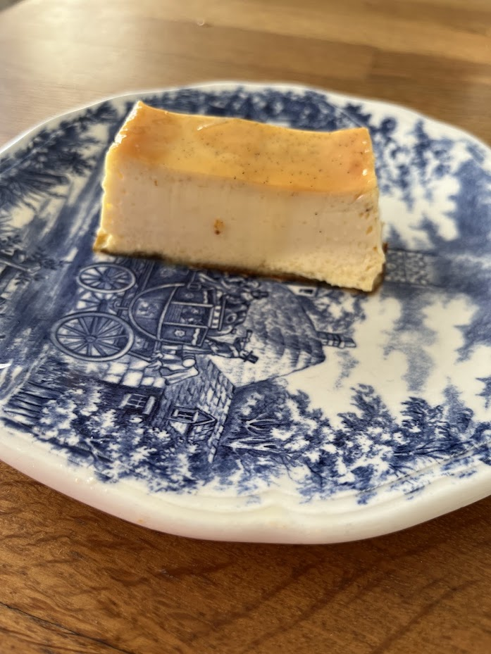

Crème renversée au caramel
⏱️ 15 min + 40 min cuisson
🔥 Facile
👥 4 à 8 personnes



Étapes
- Préparez le caramel : Chauffez le sucre, l’eau et le citron 8 à 10 min jusqu’à obtenir une belle couleur caramel. Versez immédiatement dans le moule pour napper le fond et les bords.
- Préchauffez le four à 220°C.
- Faites bouillir le lait avec la gousse de vanille fendue.
- Dans un bol, fouettez les œufs entiers + jaunes + sucre.
- Versez le lait bouillant sur le mélange œufs-sucre en fouettant.
- Versez l’appareil dans le moule caramélisé.
- Faites cuire au bain-marie pendant 40 min à 200°C.
- Laissez refroidir complètement puis réfrigérez avant de démouler.
Variantes
Variante 1
Préparez le caramel comme indiqué, mais versez-le dans le lait bouillant au lieu de le mettre dans le moule. Beurrez ensuite le moule et saupoudrez-le de sucre avant d’y verser l’appareil.
Variante 2
Beurrez le moule et sucrez-le. Versez l’appareil, puis ajoutez le caramel par-dessus avant cuisson.